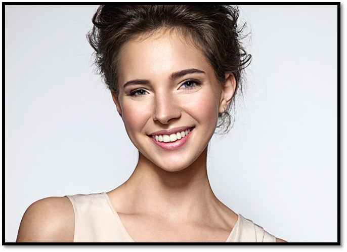

Symmetry

.png)
Fold each face in half down the middle. On the left, the two halves don't quite line up — an eye sits a little differently, the jaw leans. On the right, the halves are near-mirror images. That's symmetry, and across cultures people reliably rate more symmetrical faces as more attractive.
Why would we care? Growing a perfectly symmetrical face is biologically "expensive." Infections, toxins, and genetic hiccups during development all tend to nudge things slightly off-center. So your brain uses symmetry as a rough shortcut for "this person developed in good health." You're not consciously measuring millimeters — it just registers as hot.
Researchers have actually measured this: drinking alcohol reduces our ability to detect facial asymmetry. When you can't spot the flaws, faces look more symmetrical — and therefore more attractive. "Beer goggles" are basically your symmetry-detector on the fritz.
Averageness
.png)
This one sounds like an insult: the more average a face is, the more attractive people tend to find it. But "average" here doesn't mean boring or plain — it means mathematically typical. The face on the right is the same person on the left, digitally shifted toward the average of many faces.
When you blend lots of faces together, individual quirks — a slightly large nose here, an uneven brow there — cancel out, and the skin and proportions settle into something familiar. Your brain loves this: average faces are easier to process, feel familiar, and again hint at a healthy, typical genetic makeup. Familiar and easy literally feels good — so most people prefer the version on the right.
Mixing ancestries
.png)
Here's where averageness gets a twist. Both of these are composites — blended faces. The one on the left averages together East Asian women. The one on the right averages East Asian and Caucasian faces.
Because each ancestry carries its own distinctive features, averaging across two of them pushes a face toward an even broader "global average" — plus a dash of novelty your brain finds intriguing. It's a big reason studies repeatedly find mixed-race faces rated as more attractive, on average, than single-race faces. Think of it as averageness, leveled up.
🎉 That's the science. Symmetry, averageness, and a blend of ancestries — that's a lot of what your split-second brain was really reacting to.
One caveat: these are average tendencies from research, not laws. Attraction is also shaped by culture, personality, familiarity, and plenty of individual taste — so your mileage will (happily) vary.